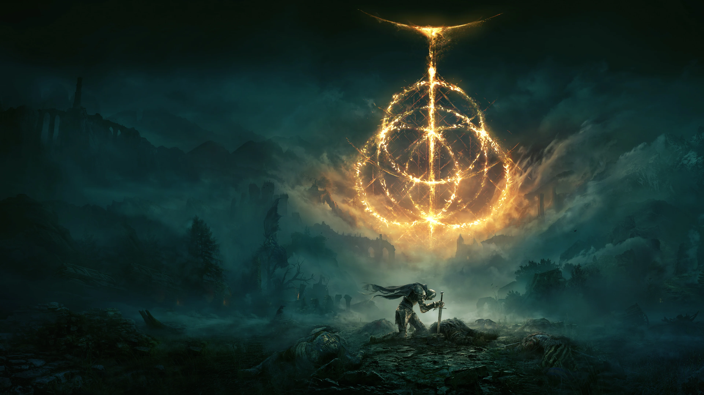

Red Dead Redemption 2
arthur.silva · há 2 horas
Simplesmente uma obra-prima. Atmosfera, personagens e história incríveis.

Um vasto mundo aberto, repleto de mistérios, desafios épicos e uma história inesquecível.
Ver avaliaçõesarthur.silva · há 2 horas
Simplesmente uma obra-prima. Atmosfera, personagens e história incríveis.

luna.mendes · há 5 horas
Uma experiência divertida para quem sempre sonhou em explorar Hogwarts.

joao.games · ontem
Uma narrativa marcante e personagens que continuam na memória.
Arthur Silva · há 3h
142Julia Costa · há 5h
98